Flow Matching & Score-Based Diffusion
Digital Twins for Physical Systems
Computational Science and Engineering — Georgia Institute of Technology
2026-03-04


Flow Matching & Score-Based Diffusion
a tutorial
Felix J. Herrmann
School of Computational Science and Engineering — Georgia Institute of Technology
Slides build on Holderrieth and Erives (2025) — Course website
Outline
- Motivation: From discrete to continuous normalizing flows
- Generative modeling as sampling
- Flow models: ODEs, vector fields, and flows
- Diffusion models: SDEs and stochastic sampling
- Probability paths: Conditional and marginal
- Vector fields: Conditional and marginal
- Score functions: Conditional and marginal
- Training flow matching
- Training score matching
- Reparameterization & unified view
Motivation: Why Continuous Flows?
Discrete normalizing flows (Rezende and Mohamed 2016; Dinh, Krueger, and Bengio 2015; Dinh, Sohl-Dickstein, and Bengio 2017):
- Model \(p(x) = p(z) \left|\det \frac{\partial f^{-1}}{\partial x}\right|\) via a chain of invertible transformations \(f = f_K \circ \cdots \circ f_1\)
- Each layer must be invertible with a tractable Jacobian determinant
- This severely constrains architecture choices
Key limitations:
- End-to-end automatic differentiation through the entire chain is expensive
- Training requires backprop through all \(K\) layers simultaneously
- Architectural constraints limit expressiveness
Continuous normalizing flows (Chen et al. 2018): Replace the discrete chain with an ODE
- Parameterize a vector field \(u_t^\theta(x)\) instead of invertible layers
- No Jacobian constraint on the network architecture
- Training can be done via regression (flow matching) – analogous to layer-by-layer training
- Much simpler and more scalable!
Part I: Generative Modeling as Sampling
Generative AI: Images and Video
We represent the objects we want to generate as vectors \(z \in \mathbb{R}^d\):
| Modality | Representation | Dimensions |
|---|---|---|
| Image | \(z \in \mathbb{R}^{H \times W \times 3}\) | e.g., \(256 \times 256 \times 3 \approx 200\text{K}\) |
| Video | \(z \in \mathbb{R}^{T \times H \times W \times 3}\) | e.g., \(16 \times 256 \times 256 \times 3 \approx 3.1\text{M}\) |
State-of-the-art generative models for images/videos are flow and diffusion models:
- Stable Diffusion 3 (Esser et al. 2024) – image generation via flow matching
- Meta Movie Gen (Polyak et al. 2024) – video generation via flow matching
- AlphaFold3 – protein structure via diffusion
Objects as Vectors
Throughout this lecture, we identify the objects being generated as vectors \(z \in \mathbb{R}^d\).
Generation as Sampling
“Creating noise from data is easy; creating data from noise is generative modeling.” — Song et al. (Song et al. 2020)
There is no single “best” image of a dog. Rather, there is a data distribution \(p_\text{data}\) giving higher likelihood to better images.
Generative Model
A generative model is a machine learning model that generates samples \(z \sim p_\text{data}\) given a dataset \(z_1, \ldots, z_N \sim p_\text{data}\).
Conditional generation: sample from \(z \sim p_\text{data}(\cdot \mid y)\) where \(y\) is a conditioning variable (e.g., text prompt).
From Noise to Data
Assume access to a simple initial distribution \(p_\text{init}\) (e.g., \(p_\text{init} = \mathcal{N}(0, I_d)\)).
Goal: Transform samples \(x \sim p_\text{init}\) into samples from \(p_\text{data}\).
Initial distribution \(p_\text{init}\)
- Simple (e.g., Gaussian)
- Easy to sample from
Data distribution \(p_\text{data}\)
- Complex, unknown density
- We only have samples \(z_1, \ldots, z_N\)
Summary
- Objects = vectors \(z \in \mathbb{R}^d\)
- Generation = sampling from \(p_\text{data}\)
- Goal: train a model to transform \(p_\text{init} \to p_\text{data}\)
Generative Models
A generative model converts samples from an initial distribution into samples from the data distribution:
\[x \sim p_\text{init} \;\xrightarrow{\text{Generative Model}}\; z \sim p_\text{data}\]
Initial distribution \(p_\text{init}\)
Default: \(\mathcal{N}(0, I_d)\)
- Simple, known density
- Easy to sample
\[\Longrightarrow\]
Generative Model
(parameterized by \(\theta\))
Data distribution \(p_\text{data}\)
- Complex, unknown
- Only have samples \(z_1, \ldots, z_N\)
How? Flow and diffusion models use differential equations to transport \(p_\text{init} \to p_\text{data}\).
Part II: Flow Models
Ordinary Differential Equations
A trajectory maps time to space: \(X: [0,1] \to \mathbb{R}^d, \quad t \mapsto X_t\)
A vector field prescribes velocities: \(u: \mathbb{R}^d \times [0,1] \to \mathbb{R}^d, \quad (x,t) \mapsto u_t(x)\)
An ODE requires the trajectory to follow the vector field:
\[\begin{align}\frac{\mathrm{d}}{\mathrm{d}t} X_t &= u_t(X_t) \qquad\quad \blacktriangleright \text{ODE}\\ X_0 &= x_0 \qquad\qquad\quad \blacktriangleright \text{initial condition}\end{align}\]
The solution is the flow \(\psi_t\): \(\quad X_t = \psi_t(X_0)\)
Note
Vector fields define ODEs whose solutions are flows.
The Flow: Warping Space
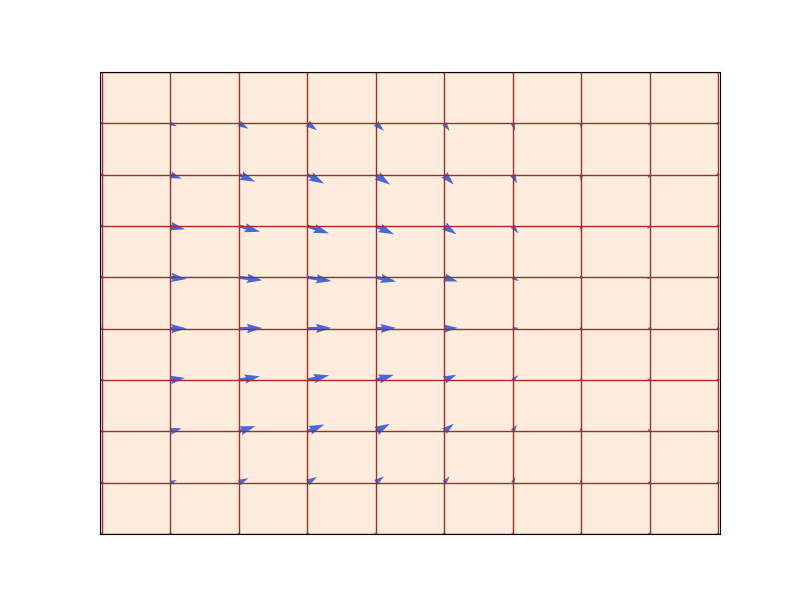
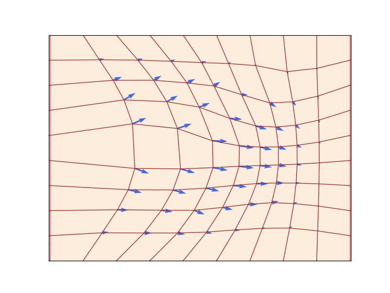
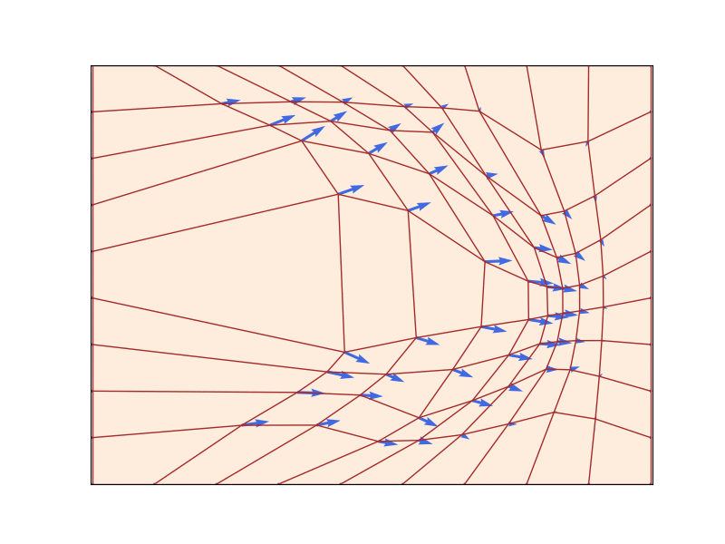
A flow \(\psi_t: \mathbb{R}^d \to \mathbb{R}^d\) (red grid) defined by a velocity field \(u_t\) (blue arrows) that prescribes instantaneous movements (\(d=2\)). A flow is a diffeomorphism that “warps” space. Figure from Lipman et al. (2024).
Existence & uniqueness: If \(u_t\) is continuously differentiable with bounded derivative, the ODE has a unique flow \(\psi_t\) that is a diffeomorphism (Perko 2013).
Simulating ODEs: Euler’s Method
In general, we cannot compute \(\psi_t\) explicitly. We use numerical methods.
Euler method: Initialize \(X_0 = x_0\), step size \(h = 1/n\), then update:
\[X_{t+h} = X_t + h\, u_t(X_t) \qquad (t = 0, h, 2h, \ldots, 1-h)\]
Simple but effective. More sophisticated methods (Heun) also available (Iserles 2009).
Flow Models
A flow model uses an ODE to transform \(p_\text{init} \to p_\text{data}\):
\[\begin{align}X_0 &\sim p_\text{init} \qquad\qquad\quad\;\; \blacktriangleright \text{random initialization}\\ \frac{\mathrm{d}}{\mathrm{d}t} X_t &= u_t^\theta(X_t) \qquad \qquad\;\blacktriangleright \text{ODE with neural network } u_t^\theta\end{align}\]
Goal: Make the endpoint \(X_1 \sim p_\text{data}\), i.e., \(\psi_1^\theta(X_0) \sim p_\text{data}\).
Warning
The neural network parameterizes the vector field, not the flow. To compute the flow, we must simulate the ODE.
Algorithm 1: Sampling from a Flow Model
Sampling from a Flow Model (Euler method)
Input: Neural network vector field \(u_t^\theta\), number of steps \(n\)
- Set \(t = 0\), step size \(h = 1/n\)
- Draw \(X_0 \sim p_\text{init}\)
- For \(i = 1, \ldots, n-1\):
- \(X_{t+h} = X_t + h\, u_t^\theta(X_t)\)
- \(t \leftarrow t + h\)
- Return \(X_1\)
Part III: Diffusion Models
Stochastic Processes and SDEs
A stochastic process \((X_t)_{0 \le t \le 1}\) has random trajectories: simulating twice may yield different outcomes.
Brownian motion \(W_t\): a continuous random walk with \(W_0 = 0\), normal increments \(W_t - W_s \sim \mathcal{N}(0, (t-s)I_d)\), and independent increments.
From ODEs to SDEs: Add stochastic dynamics driven by Brownian motion:
\[\begin{align}\mathrm{d}X_t &= u_t(X_t)\,\mathrm{d}t + \sigma_t\,\mathrm{d}W_t \qquad \blacktriangleright \text{ SDE}\\ X_0 &= x_0 \qquad\qquad\qquad\qquad\quad \blacktriangleright \text{ initial condition}\end{align}\]
where \(\sigma_t \geq 0\) is the diffusion coefficient. An ODE is an SDE with \(\sigma_t = 0\).
Ornstein-Uhlenbeck Processes
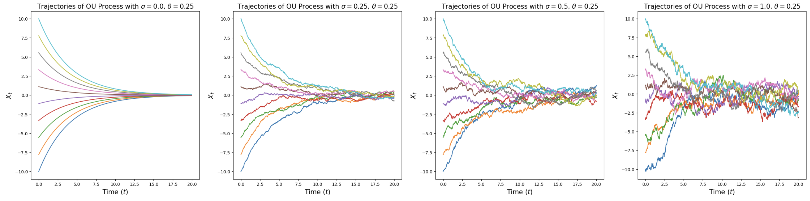
Ornstein-Uhlenbeck processes \(\mathrm{d}X_t = -\theta X_t\,\mathrm{d}t + \sigma\,\mathrm{d}W_t\) for \(\theta = 0.25\) and various \(\sigma\). For \(\sigma = 0\): deterministic flow converging to origin. For \(\sigma > 0\): random paths converging to \(\mathcal{N}(0, \sigma^2/(2\theta))\). From Holderrieth and Erives (2025).
Diffusion Models
A diffusion model parameterizes an SDE with neural network \(u_t^\theta\):
\[\begin{align}\mathrm{d}X_t &= u_t^\theta(X_t)\,\mathrm{d}t + \sigma_t\,\mathrm{d}W_t \qquad \blacktriangleright \text{ SDE}\\ X_0 & \sim p_\text{init} \qquad\qquad\qquad\qquad\;\; \blacktriangleright \text{ random initialization}\end{align}\]
Goal: \(X_1 \sim p_\text{data}\). A diffusion model with \(\sigma_t = 0\) is a flow model.
Algorithm 2: Sampling from a Diffusion Model
Sampling from a Diffusion Model (Euler-Maruyama method)
Input: Neural network \(u_t^\theta\), steps \(n\), diffusion coefficient \(\sigma_t\)
- Set \(t = 0\), step size \(h = 1/n\)
- Draw \(X_0 \sim p_\text{init}\)
- For \(i = 1, \ldots, n-1\):
- Draw \(\epsilon \sim \mathcal{N}(0, I_d)\)
- \(X_{t+h} = X_t + h\, u_t^\theta(X_t) + \sigma_t \sqrt{h}\, \epsilon\)
- \(t \leftarrow t + h\)
- Return \(X_1\)
The Training Problem
We need to train \(u_t^\theta\) by minimizing a loss:
\[\mathcal{L}(\theta) = \|u_t^\theta(x) - \underbrace{u_t^\text{target}(x)}_{\text{training target}}\|^2\]
Two-step approach:
- Find the training target \(u_t^\text{target}\): a vector field whose ODE/SDE converts \(p_\text{init}\) into \(p_\text{data}\)
- Train \(u_t^\theta\) to approximate \(u_t^\text{target}\)
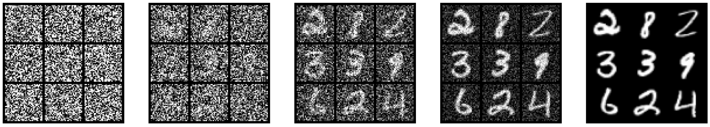
Part IV: Constructing the Training Target
Conditional Probability Path
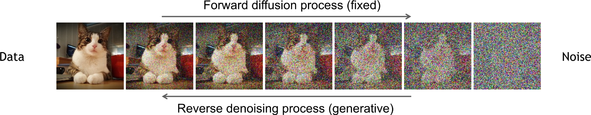
Variational diffusion model: forward noising process. From Kreis et al. (2022).
A conditional probability path \(p_t(x \mid z)\) is a family of distributions over \(\mathbb{R}^d\) such that:
\[p_0(\cdot \mid z) = p_\text{init}, \qquad p_1(\cdot \mid z) = \delta_z \qquad \forall z \in \mathbb{R}^d\]
It gradually converts a single data point \(z\) into \(p_\text{init}\).
Marginal Probability Path
Every conditional path \(p_t(x \mid z)\) induces a marginal probability path:
\[\begin{align}\text{Sample: } z &\sim p_\text{data}, \; x \sim p_t(\cdot \mid z) \;\qquad\;\;\qquad\qquad\blacktriangleright\text{sampling from marginal path}\\ p_t(x) &= \int p_t(x \mid z)\, p_\text{data}(z)\, \mathrm{d}z \qquad\qquad\quad\;\; \blacktriangleright\text{density of marginal path}\end{align}\]
The marginal path interpolates between noise and data:
\[p_0 = p_\text{init} \qquad \text{and} \qquad p_1 = p_\text{data}\]
Warning
We do not know the density \(p_t(x)\) because the integral is intractable. But we can sample from it.
Gaussian Conditional Probability Path
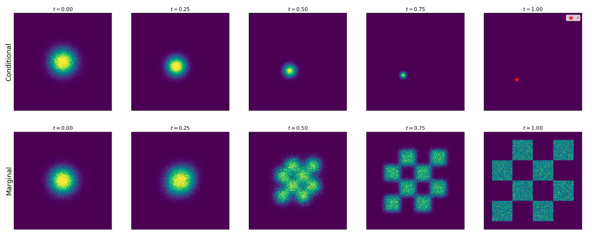
Conditional (top) vs marginal (bottom) probability path for Gaussian path with \(\alpha_t = t, \beta_t = 1-t\). From Holderrieth and Erives (2025).
\[p_t(\cdot \mid z) = \mathcal{N}(\alpha_t z, \beta_t^2 I_d)\]
where \(\alpha_t, \beta_t\) are noise schedulers: monotonic with \(\alpha_0 = \beta_1 = 0\), \(\alpha_1 = \beta_0 = 1\).
Sampling from the marginal path: \(\;z \sim p_\text{data},\; \epsilon \sim \mathcal{N}(0, I_d) \;\Rightarrow\; x = \alpha_t z + \beta_t \epsilon \sim p_t\)
Part V: Conditional and Marginal Vector Fields
The Marginalization Trick
Theorem (Marginalization Trick) (Lipman et al. 2022)
For each \(z \in \mathbb{R}^d\), let \(u_t^\text{target}(\cdot \mid z)\) be a conditional vector field such that:
\[X_0 \sim p_\text{init}, \quad \frac{\mathrm{d}}{\mathrm{d}t} X_t = u_t^\text{target}(X_t \mid z) \;\Rightarrow\; X_t \sim p_t(\cdot \mid z)\]
Then the marginal vector field:
\[u_t^\text{target}(x) = \int u_t^\text{target}(x \mid z) \frac{p_t(x \mid z)\, p_\text{data}(z)}{p_t(x)}\, \mathrm{d}z\]
follows the marginal probability path: \(X_0 \sim p_\text{init}, \; \frac{\mathrm{d}}{\mathrm{d}t} X_t = u_t^\text{target}(X_t) \;\Rightarrow\; X_t \sim p_t\).
In particular, \(X_1 \sim p_\text{data}\). So, “\(u_t^\text{target}\) converts \(p_\text{init}\) into data \(p_\text{data}\)” (Holderrieth and Erives 2025).
Conditional Vector Field for Gaussian Paths
For \(p_t(\cdot \mid z) = \mathcal{N}(\alpha_t z, \beta_t^2 I_d)\), the conditional Gaussian vector field is:
\[u_t^\text{target}(x \mid z) = \left(\dot{\alpha}_t - \frac{\dot{\beta}_t}{\beta_t}\alpha_t\right)z + \frac{\dot{\beta}_t}{\beta_t}x\]
with conditional flow \(\psi_t^\text{target}(x \mid z) = \alpha_t z + \beta_t x\) and \(\dot{\;}\) denoting temporal derivative.
Conditional vs Marginal ODE
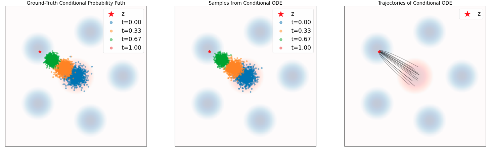
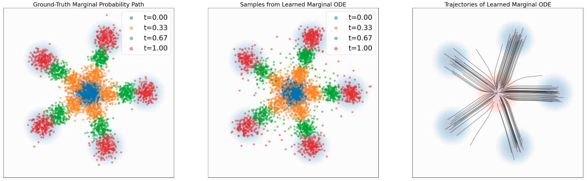
Marginal Probability Path and Marginal Vector Field
| Conditional | Marginal | |
|---|---|---|
| Prob. path | \(p_t(x \mid z)\): interpolates \(p_\text{init}\) and \(\delta_z\) | \(p_t(x) = \int p_t(x\mid z) p_\text{data}(z)\,\mathrm{d}z\): interpolates \(p_\text{init}\) and \(p_\text{data}\) |
| Vector field | \(u_t^\text{target}(x \mid z)\): ODE follows cond. path | \(u_t^\text{target}(x) = \int u_t^\text{target}(x\mid z) \frac{p_t(x\mid z) p_\text{data}(z)}{p_t(x)}\,\mathrm{d}z\): ODE follows marginal path |
The Continuity Equation
Theorem (Continuity Equation)
For a flow model with vector field \(u_t^\text{target}\) and \(X_0 \sim p_\text{init}\):
\[X_t \sim p_t \;\;\forall t \quad\Longleftrightarrow\quad \partial_t p_t(x) = -\mathrm{div}(p_t\, u_t^\text{target})(x)\]
where \(\mathrm{div}(v_t)(x) = \sum_{i=1}^d \frac{\partial}{\partial x_i} v_t(x)\).
Interpretation: The change of probability mass at \(x\) equals the net inflow of mass carried by the vector field. Probability mass is conserved – like fluid flow!
The Fokker-Planck Equation
The continuity equation generalizes to SDEs via the Fokker-Planck equation:
Theorem (Fokker-Planck Equation)
For the SDE \(\;\mathrm{d}X_t = u_t(X_t)\,\mathrm{d}t + \sigma_t\,\mathrm{d}W_t\) with \(X_0 \sim p_\text{init}\):
\[X_t \sim p_t \;\;\forall t \quad\Longleftrightarrow\quad \partial_t p_t(x) = -\mathrm{div}(p_t\, u_t)(x) + \frac{\sigma_t^2}{2}\Delta p_t(x)\]
where \(\Delta p_t(x) = \sum_{i=1}^d \frac{\partial^2}{\partial x_i^2} p_t(x)\) is the Laplacian.
- For \(\sigma_t = 0\): recovers the continuity equation
- The Laplacian term \(\Delta p_t\) is the same as in the heat equation – diffusion disperses probability mass
Part VI: Conditional and Marginal Score Functions
SDE Extension Trick
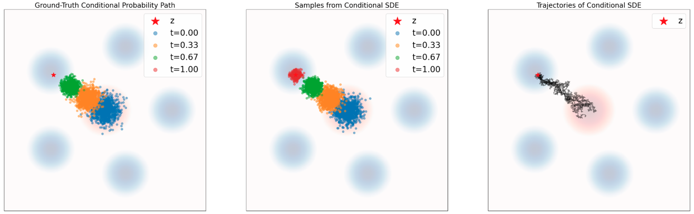
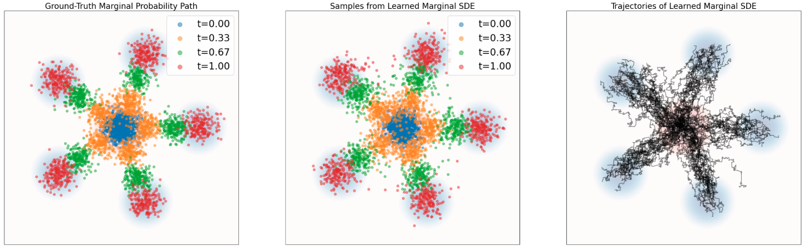
SDE Extension
Theorem (SDE Extension Trick) (Albergo, Boffi, and Vanden-Eijnden 2023)
Given \(u_t^\text{target}(x)\) and \(\nabla \log p_t(x)\), for any diffusion coefficient \(\sigma_t \geq 0\):
\[X_0 \sim p_\text{init}, \quad \mathrm{d}X_t = \left[u_t^\text{target}(X_t) + \frac{\sigma_t^2}{2}\nabla \log p_t(X_t)\right]\mathrm{d}t + \sigma_t\,\mathrm{d}W_t\]
\[\Rightarrow X_t \sim p_t \quad (0 \leq t \leq 1)\]
In particular, \(X_1 \sim p_\text{data}\).
The same identity holds if we replace \(p_t(x)\) and \(u_t^\text{target}(x)\) with \(p_t(x \mid z)\) and \(u_t^\text{target}(x \mid z)\).
Conditional Path, Vector Field, and Score
| Notation | Key Property | Gaussian Example | |
|---|---|---|---|
| Prob. Path | \(p_t(x \mid z)\) | Interpolates \(p_\text{init}\) and \(\delta_z\) | \(\mathcal{N}(\alpha_t z, \beta_t^2 I_d)\) |
| Vector Field | \(u_t^\text{target}(x \mid z)\) | ODE follows cond. path | \((\dot{\alpha}_t - \frac{\dot{\beta}_t}{\beta_t}\alpha_t)z + \frac{\dot{\beta}_t}{\beta_t}x\) |
| Score | \(\nabla \log p_t(x \mid z)\) | Gradient of log-likelihood | \(-\frac{x - \alpha_t z}{\beta_t^2}\) |
for noise schedules \(\alpha_t,\beta_t\in \mathbb{R}\) continuously differentiable, monotonic, and \(\alpha_0=\beta_0=0\) and \(\alpha_1=\beta_1=1\)
Marginal Path, Vector Field, and Score
| Notation | Key Property | Formula | |
|---|---|---|---|
| Prob. Path | \(p_t(x)\) | Interpolates \(p_\text{init}\) and \(p_\text{data}\) | \(\int p_t(x \mid z) p_\text{data}(z)\,\mathrm{d}z\) |
| Vector Field | \(u_t^\text{target}(x)\) | ODE follows marginal path | \(\int u_t^\text{target}(x\mid z) \frac{p_t(x\mid z) p_\text{data}(z)}{p_t(x)}\,\mathrm{d}z\) |
| Score | \(\nabla \log p_t(x)\) | Can extend ODE to SDE | \(\int \nabla \log p_t(x\mid z) \frac{p_t(x\mid z) p_\text{data}(z)}{p_t(x)}\,\mathrm{d}z\) |
We can learn the marginal vector field by approximating the conditional Vector Field for many different data points \(z\).
Score Functions
The marginal score function \(\nabla \log p_t(x)\) can be expressed via conditional scores:
\[\nabla \log p_t(x) = \int \nabla \log p_t(x \mid z) \frac{p_t(x \mid z)\, p_\text{data}(z)}{p_t(x)}\,\mathrm{d}z\]
For the Gaussian path \(p_t(x \mid z) = \mathcal{N}(\alpha_t z, \beta_t^2 I_d)\):
\[\nabla \log p_t(x \mid z) = -\frac{x - \alpha_t z}{\beta_t^2}\]
The conditional score is a linear function of \(x\) – a unique feature of Gaussians.
Score-Based Sampling: Langevin Dynamics
Langevin dynamics is a special case where \(p_t = p\) is static and \(u_t^\text{target} = 0\):
\[\mathrm{d}X_t = \frac{\sigma_t^2}{2}\nabla \log p(X_t)\,\mathrm{d}t + \sigma_t\,\mathrm{d}W_t\]
The distribution \(p\) is a stationary distribution: \(X_0 \sim p \;\Rightarrow\; X_t \sim p\;\;(t \geq 0)\).
Under mild conditions, \(X_t \to p\) regardless of initialization.
This is the basis of molecular dynamics simulations and MCMC methods.
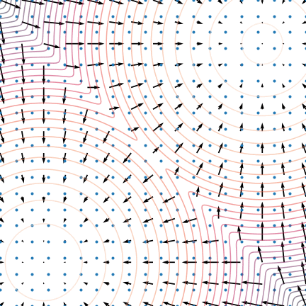
Langevin Dynamics: Convergence
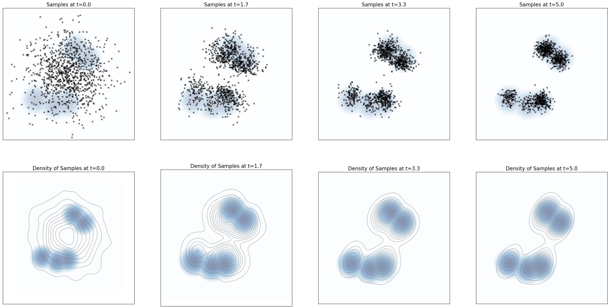
Particles evolving under Langevin dynamics with \(p(x)\) taken to be a Gaussian mixture with 5 modes. The distribution of samples converges to the equilibrium distribution \(p\) (blue background). From Holderrieth and Erives (2025).
Score Estimation: Pitfalls
Estimating the score \(\nabla \log p(x)\) in low-density regions is inaccurate because few data points are available there.
Solution: Perturb data with multiple noise levels to fill in low-density regions (Song and Ermon 2019).

Annealed Langevin Dynamics
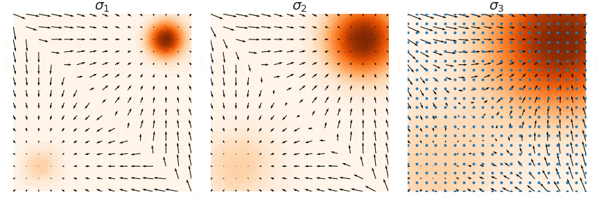
Train score networks at multiple noise levels and use annealed Langevin dynamics: start with high noise, gradually decrease.
This gives accurate score estimates throughout the space and enables high-quality sampling.
Forward Diffusion & Denoising
Part VII: Training Flow Matching
Flow Matching Loss
We want to find \(\theta\) so that \(u_t^\theta \approx u_t^\text{target}\).
The flow matching loss (marginal):
\[\mathcal{L}_\text{FM}(\theta) = \mathbb{E}_{t \sim \text{Unif}, x \sim p_t}\left[\|u_t^\theta(x) - u_t^\text{target}(x)\|^2\right]\]
\[= \mathbb{E}_{t \sim \text{Unif}, z \sim p_\text{data}, x \sim p_t(\cdot \mid z)}\left[\|u_t^\theta(x) - u_t^\text{target}(x)\|^2\right]\]
Problem: We cannot compute \(u_t^\text{target}(x)\) because the integral in its definition is intractable.
Conditional Flow Matching Loss
The conditional vector field \(u_t^\text{target}(x \mid z)\) is tractable! Define the conditional flow matching (CFM) loss:
\[\mathcal{L}_\text{CFM}(\theta) = \mathbb{E}_{t \sim \text{Unif}, z \sim p_\text{data}, x \sim p_t(\cdot \mid z)}\left[\|u_t^\theta(x) - u_t^\text{target}(x \mid z)\|^2\right]\]
Note: \(u_t^\text{target}(x \mid z)\) is used instead of \(u_t^\text{target}(x)\) . . .
What sense does it make to regress against the conditional vector field if it’s the marginal vector field we care about?
As it turns out, by explicitly regressing against the tractable, conditional vector field, we are implicitly regressing against the intractable, marginal vector field (Holderrieth and Erives 2025).
Key Theorem: CFM = FM (up to constant)
Theorem (Lipman et al. 2022)
\[\mathcal{L}_\text{FM}(\theta) = \mathcal{L}_\text{CFM}(\theta) + C\]
where \(C\) is independent of \(\theta\). Therefore:
\[\nabla_\theta \mathcal{L}_\text{FM}(\theta) = \nabla_\theta \mathcal{L}_\text{CFM}(\theta)\]
Minimizing \(\mathcal{L}_\text{CFM}\) with SGD is equivalent to minimizing \(\mathcal{L}_\text{FM}\).
Proof idea: Expand \(\|u_t^\theta - u_t^\text{target}\|^2\), use linearity of expectation, and apply the marginalization trick to swap conditional ↔︎ marginal in the cross-term.
Flow Matching for Gaussian Paths
Theorem (Gaussian CFM Loss)
For Gaussian \(p_t(\cdot \mid z) = \mathcal{N}(\alpha_t z, \beta_t^2 I_d)\), with \(x_t = \alpha_t z + \beta_t \epsilon\) for \(\epsilon \sim \mathcal{N}(0, I_d)\):
\[\mathcal{L}_\text{CFM}(\theta) = \mathbb{E}_{t, z \sim p_\text{data}, \epsilon \sim \mathcal{N}(0, I_d)}\left[\|u_t^\theta(\alpha_t z + \beta_t \epsilon) - (\dot{\alpha}_t z + \dot{\beta}_t \epsilon)\|^2\right]\]
CondOT path (\(\alpha_t = t, \beta_t = 1-t\)): \(\quad\dot{\alpha}_t = 1, \dot{\beta}_t = -1\)
\[\mathcal{L}_\text{CFM}(\theta) = \mathbb{E}_{t, z, \epsilon}\left[\|u_t^\theta(tz + (1-t)\epsilon) - (z - \epsilon)\|^2\right]\]
This is what Stable Diffusion 3 and Meta Movie Gen Video use!
Visualizing Flow Matching Training
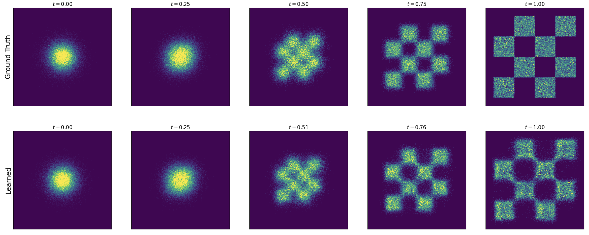
Training a flow matching model with Gaussian CondOT path. Top: ground truth marginal probability path \(p_t\). Bottom: samples from trained flow matching model. After training, the distributions match. From Holderrieth and Erives (2025).
Algorithm 3: Flow Matching Training
Flow Matching Training (Gaussian CondOT path \(p_t(x\mid z) = \mathcal{N}(tz, (1-t)^2 I_d)\))
Input: Dataset \(z \sim p_\text{data}\), neural network \(u_t^\theta\)
For each mini-batch:
- Sample data \(z\) from dataset
- Sample \(t \sim \text{Unif}_{[0,1]}\)
- Sample \(\epsilon \sim \mathcal{N}(0, I_d)\)
- Set \(x = tz + (1-t)\epsilon\)
- Compute loss: \(\mathcal{L}(\theta) = \|u_t^\theta(x) - (z - \epsilon)\|^2\)
- General: \(\mathcal{L}(\theta) = \|u_t^\theta(x) - u_t^\text{target}(x \mid z)\|^2\)
- Update \(\theta\) via gradient descent on \(\mathcal{L}(\theta)\)
CondOT Path: Linear Interpolation
For the straight-line schedule \(\alpha_t = t\), \(\beta_t = 1-t\):
\[x_t = tz + (1-t)\epsilon \qquad \blacktriangleright \text{ linear interpolation of noise and data}\]
\[u_t^\text{target}(x \mid z) = z - \epsilon \qquad \blacktriangleright \text{ velocity = difference of data and noise}\]
Intuition: The conditional velocity field points from noise \(\epsilon\) to data \(z\) at constant speed.
This is the rectified flow (Liu, Gong, and Liu 2022) / CondOT formulation.
The Big Picture: Flow Matching
\[\underbrace{z \sim p_\text{data}}_{\text{sample data}}, \quad \underbrace{\epsilon \sim \mathcal{N}(0,I_d)}_{\text{sample noise}}, \quad \underbrace{t \sim \text{Unif}_{[0,1]}}_{\text{sample time}}\]
\[\underbrace{x_t = \alpha_t z + \beta_t \epsilon}_{\text{noised sample}}, \quad \underbrace{u_t^\text{target}(x_t \mid z) = \dot{\alpha}_t z + \dot{\beta}_t \epsilon}_{\text{target velocity}}\]
\[\underbrace{\mathcal{L}_\text{CFM}(\theta) = \|u_t^\theta(x_t) - u_t^\text{target}(x_t \mid z)\|^2}_{\text{regression loss (MSE)}}\]
After training: simulate \(\mathrm{d}X_t = u_t^\theta(X_t)\,\mathrm{d}t\) from \(X_0 \sim p_\text{init}\) to get \(X_1 \sim p_\text{data}\).
Part VIII: Training Score Matching
Extending to SDEs
We can extend the target ODE to an SDE with the same marginal distribution:
\[\mathrm{d}X_t = \left[u_t^\text{target}(X_t) + \frac{\sigma_t^2}{2}\nabla \log p_t(X_t)\right]\mathrm{d}t + \sigma_t\,\mathrm{d}W_t\] \[X_0 \sim p_\text{init} \quad\Rightarrow\quad X_t \sim p_t \;\;(0 \leq t \leq 1)\]
The marginal score \(\nabla \log p_t(x)\) is also intractable, like \(u_t^\text{target}\):
\[\nabla \log p_t(x) = \int \nabla \log p_t(x \mid z)\,\frac{p_t(x\mid z)\,p_\text{data}(z)}{p_t(x)}\,\mathrm{d}z\]
Score Matching Loss
Introduce a score network \(s_t^\theta: \mathbb{R}^d \times [0,1] \to \mathbb{R}^d\) to approximate \(\nabla \log p_t\).
Score matching vs conditional score matching:
\[\mathcal{L}_\text{SM}(\theta) = \mathbb{E}_{t, z, x \sim p_t(\cdot \mid z)}\left[\|s_t^\theta(x) - \nabla \log p_t(x)\|^2\right] \qquad \blacktriangleright \text{ intractable}\]
\[\mathcal{L}_\text{CSM}(\theta) = \mathbb{E}_{t, z, x \sim p_t(\cdot \mid z)}\left[\|s_t^\theta(x) - \nabla \log p_t(x \mid z)\|^2\right] \quad \blacktriangleright \text{ tractable!}\]
As before: \(\mathcal{L}_\text{SM}(\theta) = \mathcal{L}_\text{CSM}(\theta) + C\), so they have the same gradient.
Score Matching for Gaussian Paths
For \(p_t(x \mid z) = \mathcal{N}(\alpha_t z, \beta_t^2 I_d)\):
\[\nabla \log p_t(x \mid z) = -\frac{x - \alpha_t z}{\beta_t^2} = -\frac{\epsilon}{\beta_t}\]
The conditional score matching loss becomes:
\[\mathcal{L}_\text{CSM}(\theta) = \mathbb{E}_{t, z, \epsilon}\left[\left\|s_t^\theta(\alpha_t z + \beta_t \epsilon) + \frac{\epsilon}{\beta_t}\right\|^2\right]\]
The network learns to predict the noise used to corrupt data – hence denoising score matching (Ho, Jain, and Abbeel 2020).
Denoising Diffusion Models (DDPM)
The loss \(\|s_t^\theta(x_t) + \epsilon/\beta_t\|^2\) is numerically unstable for \(\beta_t \approx 0\) (low noise).
Solution (Ho, Jain, and Abbeel 2020): Reparameterize \(s_t^\theta\) into a noise predictor \(\epsilon_t^\theta\):
\[-\beta_t\, s_t^\theta(x) = \epsilon_t^\theta(x)\]
\[\Rightarrow \quad \mathcal{L}_\text{DDPM}(\theta) = \mathbb{E}_{t, z, \epsilon}\left[\|\epsilon_t^\theta(\alpha_t z + \beta_t \epsilon) - \epsilon\|^2\right]\]
What the network does: Predict the noise \(\epsilon\) that was used to corrupt data point \(z\).
This is the formulation used by the original Denoising Diffusion Probabilistic Models (DDPM) (Ho, Jain, and Abbeel 2020).
Algorithm 4: Score Matching Training
Score Matching Training (Gaussian probability path)
Input: Dataset \(z \sim p_\text{data}\), score network \(s_t^\theta\) (or noise predictor \(\epsilon_t^\theta\))
For each mini-batch:
- Sample data \(z\) from dataset
- Sample \(t \sim \text{Unif}_{[0,1]}\)
- Sample \(\epsilon \sim \mathcal{N}(0, I_d)\)
- Set \(x_t = \alpha_t z + \beta_t \epsilon\)
- Compute loss:
- \(\mathcal{L}(\theta) = \|s_t^\theta(x_t) + \epsilon/\beta_t\|^2\)
- Alternative: \(\mathcal{L}(\theta) = \|\epsilon_t^\theta(x_t) - \epsilon\|^2\) (noise prediction)
- Update \(\theta\) via gradient descent
Part IX: Unifying Flow and Score Matching
Deterministic vs Stochastic Sampling
| Flow Model (ODE) | Diffusion Model (SDE) | |
|---|---|---|
| Dynamics | \(\mathrm{d}X_t = u_t^\theta(X_t)\,\mathrm{d}t\) | \(\mathrm{d}X_t = [u_t^\theta + \frac{\sigma_t^2}{2}s_t^\theta]\,\mathrm{d}t + \sigma_t\,\mathrm{d}W_t\) |
| Randomness | Only in \(X_0 \sim p_\text{init}\) | In \(X_0\) and Brownian motion |
| Training | Flow matching | Score matching (or flow matching) |
| Sampling | Deterministic | Stochastic |
In theory, all \(\sigma_t\) give \(X_1 \sim p_\text{data}\). In practice, the optimal \(\sigma_t\) depends on training/simulation errors and is found empirically (Karras et al. 2022; Ma et al. 2024).
Good news: ODE sampling often gives the best results. SDE sampling is an option, not a must!
Reparameterization: Velocity ↔︎ Score
For Gaussian probability paths, the conditional vector field and score are linear functions with different coefficients:
\[u_t^\text{target}(x \mid z) = \left(\dot{\alpha}_t - \frac{\dot{\beta}_t}{\beta_t}\alpha_t\right)z + \frac{\dot{\beta}_t}{\beta_t}x\]
\[\nabla \log p_t(x \mid z) = -\frac{x - \alpha_t z}{\beta_t^2}\]
Conversion formula (extends to marginals):
\[u_t^\theta(x) = \left(\beta_t^2\frac{\dot{\alpha}_t}{\alpha_t} - \dot{\beta}_t\beta_t\right)s_t^\theta(x) + \frac{\dot{\alpha}_t}{\alpha_t}x\]
\[s_t^\theta(x) = \frac{\alpha_t\, u_t^\theta(x) - \dot{\alpha}_t\, x}{\beta_t^2 \dot{\alpha}_t - \alpha_t \dot{\beta}_t \beta_t}\]
Unified Training: No Need for Both
Key Result
For Gaussian probability paths, there is no need to separately train both \(u_t^\theta\) and \(s_t^\theta\). Knowledge of one is sufficient to compute the other via the conversion formula.
We can choose whether to use flow matching or score matching to train – the result is equivalent.
Stochastic sampling from a trained score network \(s_t^\theta\):
\[\mathrm{d}X_t = \left[\left(\beta_t^2\frac{\dot{\alpha}_t}{\alpha_t} - \dot{\beta}_t\beta_t + \frac{\sigma_t^2}{2}\right)s_t^\theta(X_t) + \frac{\dot{\alpha}_t}{\alpha_t}X_t\right]\mathrm{d}t + \sigma_t\,\mathrm{d}W_t\]
Algorithm 6: Unified Sampling
Sampling from a Trained Model (Gaussian path)
Input: Trained network (\(u_t^\theta\) or \(s_t^\theta\)), steps \(n\), diffusion coefficient \(\sigma_t\)
- Draw \(X_0 \sim p_\text{init} = \mathcal{N}(0, I_d)\)
- Convert between \(u_t^\theta \leftrightarrow s_t^\theta\) if needed via conversion formula
- Set \(h = 1/n\)
- For \(t = 0, h, 2h, \ldots, 1-h\):
- Draw \(\epsilon \sim \mathcal{N}(0, I_d)\)
- \(X_{t+h} = X_t + h\left[u_t^\theta(X_t) + \frac{\sigma_t^2}{2}s_t^\theta(X_t)\right] + \sigma_t\sqrt{h}\,\epsilon\)
- Return \(X_1\)
- \(\sigma_t = 0\): deterministic (flow / probability flow ODE)
- \(\sigma_t > 0\): stochastic (diffusion / SDE sampling)
Score Field Comparison
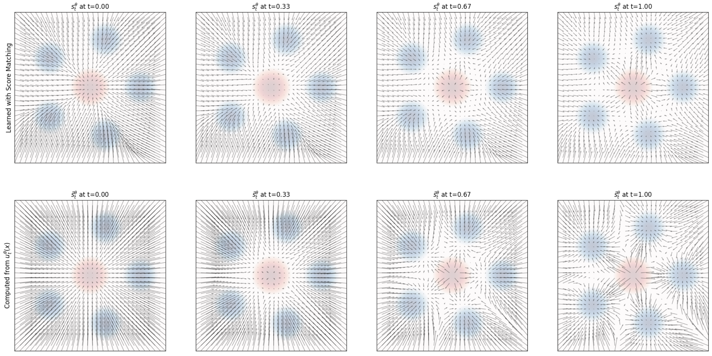
Top: Score field \(s_t^\theta(x)\) learned via score matching. Bottom: Score field derived from \(u_t^\theta\) via conversion formula. Both agree, confirming equivalence. From Holderrieth and Erives (2025).
Part X: Architecture & Practical Considerations
Neural Network Architecture
The neural network \(u_t^\theta(x \mid y)\) must accept:
- \(x \in \mathbb{R}^d\) (noised input)
- \(t \in [0,1]\) (time)
- \(y \in \mathcal{Y}\) (conditioning)
Common architectures:
- U-Net for images (convolutional)
- Diffusion Transformer (DiT) – attention-based
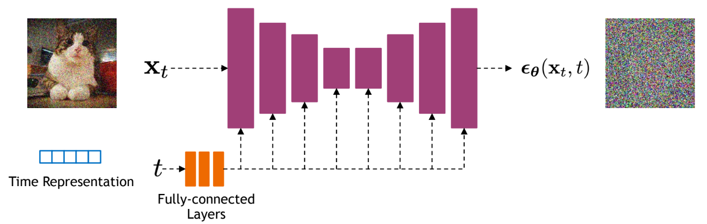
Summary
What We Learned
- Generative modeling = sampling: transform \(p_\text{init} \to p_\text{data}\) via ODE/SDE
- Flow models: deterministic ODE \(\mathrm{d}X_t = u_t^\theta(X_t)\,\mathrm{d}t\)
- Diffusion models: stochastic SDE adding \(\sigma_t\,\mathrm{d}W_t\)
- Probability paths: conditional \(p_t(x \mid z)\) ↔︎ marginal \(p_t(x)\) via marginalization
- Training: Regress against conditional vector field/score (tractable) to implicitly learn the marginal (intractable)
- Flow matching ↔︎ Score matching: equivalent for Gaussian paths
- Sampling: Choose \(\sigma_t = 0\) (ODE) or \(\sigma_t > 0\) (SDE)
“Creating noise from data is easy; creating data from noise is generative modeling.”